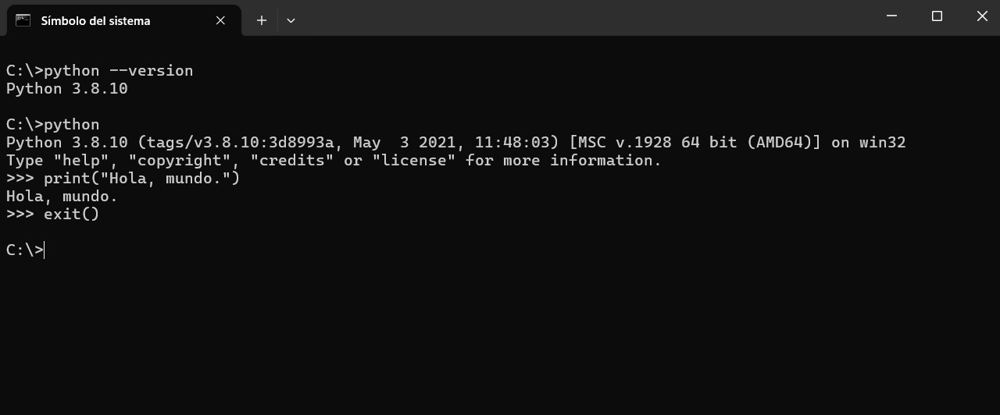

FPD - Highlighted
Comprobación previa
Antes de proceder a la instalación, se recomienda verificar si Python ya está disponible en el sistema. Para ello, se debe abrir una terminal o consola y escribir alguno de los siguientes comandos.
En Microsoft Windows:
python --versiono bien, en sistemas Linux:
python3 --versionSi se muestra un número de versión (por ejemplo, Python 3.12.3), significa que el intérprete ya está instalado en el equipo.
FPD - Free Text
El intérprete de PythonPrograma que ejecuta directamente el código fuente de un lenguaje de programación, traduciéndolo línea por línea a instrucciones que la computadora puede ejecutar, sin generar un archivo ejecutable independiente. es el programa encargado de leer y ejecutar las instrucciones escritas en este lenguaje. Su instalación es el primer paso necesario para poder desarrollar y ejecutar programas en Python.
Instalación en Windows
- Acceder a la página oficial de descargas de Python: https://www.python.org/downloads/.
- Seleccionar el instalador correspondiente al sistema operativo (Windows 64-bit).
- Ejecutar el archivo descargado (
python-3.xx.x-amd64.exe). - Marcar la opción “Add Python to PATH” para que el sistema pueda reconocer Python desde cualquier terminal.
- Seleccionar la opción Install Now y esperar a que finalice la instalación.
- Verificar la instalación abriendo una ventana de cmd y ejecutando el comando:
python --version
Instalación en Linux (Ubuntu / Debian)
En la mayoría de distribuciones Linux, Python viene instalado por defecto. No obstante, se puede instalar o actualizar fácilmente desde la terminal utilizando los siguientes comandos:
sudo apt update
sudo apt install python3Para comprobar la versión instalada, se puede utilizar:
python3 --versionSi se desea instalar también el gestor de paquetes pip, se debe ejecutar:
sudo apt install python3-pipInstalación en macOS
En las versiones modernas de macOS, Python 3 suele estar instalado de forma predeterminada. En caso contrario, se puede realizar la instalación mediante Homebrew. Si este gestor de paquetes no está disponible, puede instalarse desde https://brew.sh.
brew install pythonPara verificar la instalación, se puede utilizar el siguiente comando:
python3 --versionVerificación final
Una vez instalado el intérprete, se puede comprobar su correcto funcionamiento abriendo una terminal y escribiendo:
pythono bien:
python3Si la instalación es correcta, aparecerá un mensaje similar al siguiente:
Python 3.12.3 (main, Apr 5 2024, 10:00:00)
[GCC 11.2.0] on linux
Type "help", "copyright", "credits" or "license" for more information.
>>>El símbolo >>> indica que se ha accedido al intérprete interactivo de Python, desde el cual es posible escribir y ejecutar instrucciones directamente.

FPD - Free Text
Ejemplo: Hola, mundo
Para comprobar que el intérprete de Python está correctamente instalado, se puede ejecutar el siguiente código directamente en la consola o terminal de Python:
>> print("Hola, mundo")Salida esperada:
Hola, mundoAl escribir print("Hola, mundo") y pulsar Enter, el intérprete mostrará en pantalla Hola, mundo. Esto confirma que Python está funcionando correctamente y que se pueden empezar a ejecutar instrucciones.
A Step Ahead
Se puede consultar la guía oficial de instalación y configuración de Python en la documentación libre publicada por la Python Software Foundation: https://docs.python.org/3/using/index.html
Now it's your turn
Marca las afirmaciones que sean correctas, referidas al intérprete de Python.